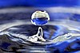

liquid
attribute

Source: Wikipedia
Wikipedia Page (Something wrong with this association? Let us know.)
Wikidata Page (Something wrong with this association? Let us know.)
Occurs in:
- chocolate~liquid__apparent_viscosity
- chocolate~liquid__casson-model_a_parameter
- chocolate~liquid__herschel-bulkley_coefficient
- chocolate~liquid__herschel-bulkley_exponent
- chocolate~liquid__shear_kinematic_viscosity
- chocolate~liquid__yield_stress
- chocolate~liquid_water__volume_fraction
- snowpack_water~liquid__mass_fraction
- snowpack_water~liquid__volume_fraction
- water~liquid__antoine-vapor-pressure_a_parameter
- water~liquid__antoine-vapor-pressure_b_parameter
- water~liquid__antoine-vapor-pressure_c_parameter
- water~liquid__mass-per-volume_density
- water~liquid_carbon~dissolved~inorganic__molar_concentration
- water~liquid_carbon~dissolved~organic__molar_concentration
- water~liquid_oxygen~dissolved~molecular__molar_concentration
- water~liquid~20C__shear_dynamic_viscosity
- water~liquid~20C__volume_dynamic_viscosity
- water~liquid~20C__shear_kinematic_viscosity
- water~liquid~20C__volume_kinematic_viscosity
- water~liquid~20C__mass-per-volume_density
- water~liquid~20C_air__surface_tension